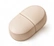

산화마그네슘
알이 작고 함량이 높지만 흡수율이 낮다고 알려짐. 변을 무르게 하는 작용(의약품 마그밀과 같은 성분)
- 알 크기와 함량을 우선할 때
- 변비 경향이 있어 장 자극이 오히려 도움이 될 때
성분 비교 · 제형·형태
마그네슘은 '마그네슘으로서 ○mg' 이 같아도 어떤 염에 붙어 있는지에 따라 한 알의 크기, 흡수, 장 자극이 달라집니다. 국내 신고 제품은 산화마그네슘이 가장 많고, 젖산·글루콘산 같은 유기산염과 해조·해수 유래 제품이 뒤를 잇습니다. 해외에서 흔한 글리시네이트·구연산염은 수집 제품의 원재료명에 거의 나타나지 않습니다.

미네랄마그네슘 성분 사전효능·권장량·궁합·먹는 시간 — 형태와 관계없이 같은 기준 · 수집 제품 1,556건식약처 인정 기능성 표현을 기준으로 정리한 일반 건강 정보이며 의학적 조언이 아닙니다 · 최종 수정 2026-10-23
원료·제조·표기·먹는 법 같은 사실 관계만 비교합니다. 흡수율 수치·가격·효과의 우열은 적지 않으며, 기능성과 섭취량 기준은 형태와 관계없이 마그네슘 성분 사전과 같습니다.
| 항목 | 산화마그네슘 | 젖산·글루콘산·구연산염 | 해조·해수·염화마그네슘 |
|---|---|---|---|
| 마그네슘 비율(무게 대비) | 매우 높음 — 알이 작음 | 낮음 — 알이 크거나 개수 증가 | 원료별 차이 |
| 흡수·위장 | 흡수율이 낮다고 알려짐, 장으로 물을 끌어 설사 가능 | 흡수에 유리하다고 알려짐, 위장이 편한 편(구연산염은 양이 많으면 설사) | 제품별 차이, 다른 미네랄 동반 |
| 먹는 시간 | 식후, 저녁 권장 | 식후 또는 취침 전 | 식후 |
| 주의 | 산화마그네슘 변비약(마그밀)과 겹치지 않기 | 글리시네이트는 아미노산 킬레이트 — 함량 환산 확인 | 요오드·나트륨 등 동반 성분 확인 |
| 라벨 표기 | '산화마그네슘' | '젖산마그네슘'·'글루콘산마그네슘'·'마그네슘 비스글리시네이트' | '해조분말'·'해수 마그네슘'·'염화마그네슘' |
| 수집 제품 수 (표기 기준) | 1,197건 | 321건 | 33건 |
함량과 알 크기를 우선하면 산화마그네슘, 위장 편의를 우선하면 젖산·글루콘산·글리시네이트 같은 유기산염이 기준이 됩니다. 어느 형태든 식약처 상한섭취량은 보충제 기준 하루 350mg 이고, 신장 기능이 떨어진 분은 쌓일 수 있어 검사 후 결정합니다. 항생제·골다공증약·갑상선약과는 시간을 띄우고, 산화마그네슘 변비약을 쓰는 중이면 영양제와 겹치지 않게 합니다.
알이 작고 함량이 높지만 흡수율이 낮다고 알려짐. 변을 무르게 하는 작용(의약품 마그밀과 같은 성분)
알이 크거나 개수가 늘지만 위장이 편한 편. 액상·분말 제품도 많음
다른 미네랄이 함께 든 천연 원료. 함량은 제품별 편차가 큼
함량은 '마그네슘 ○mg(○%)' 로 보고, 형태는 원재료명의 '산화마그네슘'·'젖산마그네슘'·'글루콘산마그네슘'·'해조분말' 표기로 확인합니다. 칼슘·비타민D 와 함께 든 복합 제품이 많으니 마그네슘 단독 함량을 보세요.
식약처 품목신고 수집분(2021-04 이후)에서 제품명·원재료명 표기로 걸러낸 제품과 쇼핑몰 검색 결과입니다. 함량·형태·원료는 제품 라벨에서 꼭 확인하세요.
무게 대비 마그네슘 비율이 가장 높은 무기염
수집 제품 1,197건 · 쇼핑몰 검색어: 마그네슘 영양제
표기로 걸러낸 신고 제품
유기산과 결합한 마그네슘 — 녹는 성질이 좋아 흡수에 유리하다고 알려짐
수집 제품 321건 · 쇼핑몰 검색어: 젖산마그네슘
표기로 걸러낸 신고 제품
해조류(듈스·해조분말)나 해수에서 얻은 천연 유래, 염화마그네슘 포함
수집 제품 33건 · 쇼핑몰 검색어: 해조 마그네슘
표기로 걸러낸 신고 제품
제품명과 원재료명의 표기로 나눈 것이라 표기가 없는 제품은 '기타' 묶음에 들어가고, 한 제품이 두 형태에 함께 셀 수 있습니다. 마그네슘 제품 전체 보기
흡수율이 낮다고 알려졌지만 함량이 높아 실제 흡수량이 크게 적지는 않고, 변비 경향이 있는 분에게는 장 자극이 도움이 되기도 합니다. 설사·복통이 생기면 유기산염으로 바꾸세요.
국내 신고 제품의 원재료명에는 거의 나타나지 않고 주로 해외 직구 제품입니다. 직구 제품은 식약처 기준으로 검토된 것이 아니므로 함량과 원료를 직접 확인하세요.
식후나 취침 전이 무난하고, 칼슘·철·아연과 한꺼번에 많이 먹으면 흡수가 서로 줄어 아침·저녁으로 나누면 좋습니다. 눈 떨림·경련 목적이면 검사로 결핍을 확인하는 것이 먼저입니다.